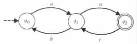

A Pumping Lemma for Regular Languages
Applications of the Pumping Lemma
A Generalization to the Pumping Lemma
It can be intuitively argued that there are computations that finite-memory programs cannot carry out, because of the limitations imposed on the amount of memory the programs can use. For instance, it can be argued that { anbn | n ³ 0 } is not recognizable by any finite-memory program. The reasoning here is that upon reaching the first b in a given input, the program must remember how many a's it read. Moreover, the argument continues that each finite-memory program has an upper bound on the number of values that it can record, whereas no such bound exists on the number of a's that the inputs can contain. As a result, one can conclude that each finite-memory program can recognize only a finite number of strings in the set { anbn | n ³ 0 }.
The purposes of this section are to show that there are computations that cannot be carried out by finite-memory programs, and to provide formal tools for identifying such computations. The proofs rely on abstractions of the intuitive argument above. However, it should be mentioned that the problem of determining for any given language, whether the language is recognizable by a finite-memory program, can be shown to be undecidable (see Theorem 4.5.6). Therefore, no tool can be expected to provide an algorithm that decides the problem in its general form.
A Pumping Lemma for Regular Languages
The following theorem provides necessary conditions for a language to be decidable by a finite-memory program. The proof of the theorem relies on the observations that the finite-memory programs must repeat a state on long inputs, and that the subcomputations between the repetitions of the states can be pumped.
Theorem 2.4.1 (Pumping lemma for regular languages) Every regular language L has a number m for which the following conditions hold. If w is in L and |w| ³ m, then w can be written as xyz, where xykz is in L for each k ³ 0. Moreover, |xy| £ m, and |y| > 0.
Proof Consider any regular language L. Let M be a finite-state automaton that recognizes L. By Theorem 2.3.1 it can be assumed that M has no e transition rules. Denote by m the number of states of M.
On input w = a1 · · · an from L the finite-state automaton M has a computation of the form
The computation goes through some sequence p0, p1, ¼ , pn of n + 1 states, where p0 is the initial state of M and pn is an accepting state of M. In each move of the computation exactly one input symbol is being read.
If the length n of the input is equal at least to the number m of states of M, then the computation consists of m or more moves and some state q must be repeated within the first m moves. That is, if n ³ m then pi = pj for some i and j such that 0 £ i < j £ m. In such a case, take x = a1 · · · ai, y = ai+1 · · · aj, and z = aj+1 · · · an.
With such a decomposition xyz of w the above computation of M takes the form
During the computation the state q = pi = pj of M is repeated. The string x is consumed before reaching the state q that is repeated. The string y is consumed between the repetition of the state q. The string z is consumed after the repetition of state q.
Consequently, M also has an accepting computation of the form
for each k ³ 0. That is, M has an accepting computation on xykz for each k ³ 0, where M starts and ends consuming each y in state q.
The substring y that is consumed between the repetition of state q is not empty,
because by assumption M has no e transition rules. 
Example 2.4.1 Let L be the regular language accepted by the finite-state automaton of Figure 2.4.1.
|

|
On input w = ababaa, the finite-state automaton goes through the sequence q0, q1, q0, q1, q0, q1, q2 of states. For such an input the pumping lemma provides the decomposition x = e, y = ab, z = abaa; and the decomposition x = a, y = ba, z = baa. The first decomposition is due to the first repetition of state q0; the second is a result of to the first repetition of state q1.
For each string w of a minimum length 3, the pumping lemma implies a decomposition
xyz in which the string y must be either ab or ba or ac. If y = ab, then x = e
and the repetition of q0 is assumed. If y = ba, then x = a and the repetition of
q1 is assumed. If y = ac, then x = a and the repetition of q1 is assumed.
Applications of the Pumping Lemma
For proving that a given language L is not regular, the pumping lemma implies the following schema of reduction to contradiction.
Example 2.4.2 Consider the nonregular language L = { 0n1n | n ³ 0 }. To prove that L is nonregular assume to the contrary that it is regular. From the assumption that L is regular deduce the existence of a fixed constant m that satisfies the conditions of the pumping lemma for L.
Choose the string w = 0m1m in L. By the pumping lemma, 0m1m has a decomposition of the form xyz, where |xy| £ m, |y| > 0, and xykz is in L for each k ³ 0. That is, the decomposition must be of the form x = 0i, y = 0j, and z = 0m-i-j1m for some i and j such that j > 0. (Note that the values of i, j, and m cannot be chosen arbitrarily.) Moreover, xy0z must be in L. However, xy0z = 0m-j1m cannot be in L because j > 0. It follows that the pumping lemma does not apply for L, consequently contradicting the assumption that L is regular.
Other choices of w can also be used to show that L is not regular. However, they might result in a more complex analysis. For instance, for w = 0m-11m-1 the pumping lemma provides three possible forms of decompositions:
Example 2.4.3 Consider the nonregular language L = { aarev | a is in {a, b}* }. To prove that L is not regular assume to the contrary that it is regular. Then deduce the existence of a fixed constant m that satisfies the conditions of the pumping lemma for L.
Choose w = ambbam in L. By the pumping lemma, ambbam = xyz for some x, y, and z such that |xy| £ m, |y| > 0 and xykz is in L for each k ³ 0. That is, x = ai, y = aj, and z = am-i-jbbam for some i and j such that j > 0. However, xy0z = am-jbbam is not in L, therefore contradicting the assumption that L is regular.
It should be noted that not every choice for w implies the desired contradiction. For
instance, consider the choice of a2m for w. By the pumping lemma, a2m has a
decomposition xyz in which x = ai, y = aj, and z = a2m-i-j for some i and j such that
j > 0. With such a decomposition, xykz = a2m+(k-1)j is not in L if and only if
2m + (k - 1)j is an odd integer. On the other hand, 2m + (k - 1)j is an odd
integer if and only if k is an even number and j is an odd number. However,
although k can arbitrarily be chosen to equal any value, such is not the case with j.
Consequently, the choice of a2m for w does not guarantee the desired contradiction.
A Generalization to the Pumping Lemma
The proof of the pumping lemma is based on the observation that a state is repeated in each computation on a "long" input, with a portion of the input being consumed between the repetition. The repetition of the state allows the pumping of the subcomputation between the repetition to obtain new accepting computations on different inputs. The proof of the pumping lemma with minor modifications also holds for the following more general theorem.
Theorem 2.4.2 For each relation R that is computable by a finite-state transducer, there exists a constant m that satisfies the following conditions. If (v, w) is in R and |v| + |w| ³ m, then v can be written as xvyvzv and w can be written as xwywzw, where (xvyvkzv, xwywkzw) is in R for each k ³ 0. Moreover, |xvyv| + |xwyw| £ m, and |yv| + |yw| > 0.
A schema, similar to the one that uses the pumping lemma for determining nonregular languages, can utilize Theorem 2.4.2 for determining relations that are not computable by finite-state transducers.
Example 2.4.4
The relation R = { (u, urev) | u is in {0, 1}* } is not computable by a finite-state
transducer. If R were computable by a finite-state transducer, then there would be a
constant m that satisfies the conditions of Theorem 2.4.2 for R. In such a case, since
(0m1m, 1m0m) is in R, then u = 0m1m could be written as xvyvzv and urev = 1m0m
could be written as xwywzw, where xv = 0iv, yv = 0jv, zv = 0m-iv-jv1m, xw = 1iw,
yw = 1jw, zw = 1m-iw-jw0m, and jv + jw > 0. Moreover, it would be implied that
(xvyv0zv, xwyw0zw) = (0m-jv1m, 1m-jw0m) must also be in R, which is not the case.